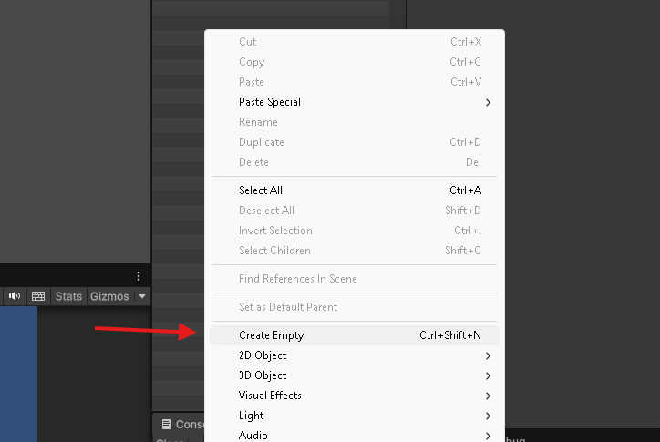
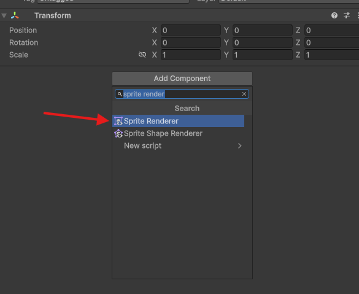
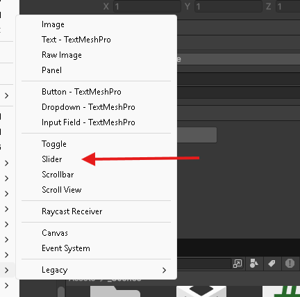
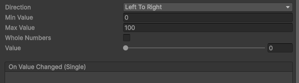

per prima cosa crea un nuovo oggetto in scena, questo sarà il tuo player, dove assegnerai lo scipt che si occupera della barra della vita

Una volta creato l'oggetto in scena, premi il pulsante add component, nella barra di ricerca trova sprite renderer, ti servirà per assegnare la sprite del player per farlo vedere all'interno della scena

Questo script gestisce la vita del player, permettendo di aumentarla o diminuirla. Utilizziamo Mathf.Clamp() per impedire che il valore della vita scenda sotto 0 o superi il valore massimo.
using UnityEngine;
public class HealthManager : MonoBehaviour
{
[Header("Health")]
private int currentHealth = 0;
private int maxHealth = 100;
[Header("Reference")]
[SerializeField] private HealthBar healthBar;
/*
puoi chiamare il metodo all'interno di una classe come ad esempio
enemy appena entra in collisione
*/
public void AddHealth(int amount)
{
/*
Aggiungiamo la quantità di vita ricevuta.
Mathf.Clamp impedisce al valore di superare maxHealth.
*/
currentHealth = Mathf.Clamp(currentHealth + amount, 0, maxHealth);
UpdateHealthBar();
}
public void RemoveHealth(int amount)
{
/*
Sottraiamo il danno dalla vita corrente.
Mathf.Clamp impedisce alla vita di scendere sotto 0.
*/
currentHealth = Mathf.Clamp(currentHealth - amount, 0 , maxHealth);
UpdateHealthBar();
}
private void UpdateHealthBar()
{
healthBar.SetHealth(currentHealth);
}
}
Seleziona il Player e, nel componente HealthManager, trascina nel campo Health Bar il GameObject che contiene lo script HealthBar
All'interno del canvas seleziona lo slider

Una volta posizionato lo Slider all'interno del Canvas, selezionalo dall'Hierarchy. Nell'Inspector imposta Min Value a 0 e Max Value a 100. In questo modo lo Slider potrà rappresentare la vita del player da 0 a 100 HP.

Qui sotto trovi lo script che ti permette di aggiornare lo slider in base alla vita tolta o alla vita che è stata incrementata
using UnityEngine;
using UnityEngine.UI;
public class HealthBar : MonoBehaviour
{
[SerializeField] private Slider healthBar;
public void SetHealth(int health) => healthBar.value = health;
}
Dopo aver aggiunto lo script HealthBar all’oggetto della UI, trascina lo Slider nel campo Health Bar presente nell’Inspector.